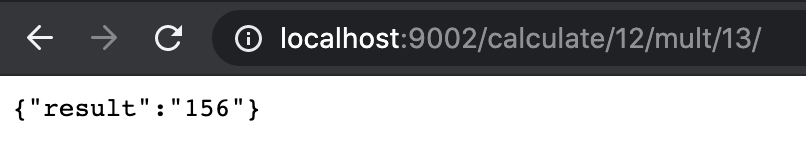

gRPC and Protbuf
Microservices have become increasingly popular among the organisations because of benefits they offer, A lot of organisations are moving towards Service Oriented Architecture (SOA) and are breaking their complex monolithic applications into smaller and modular services which gives a liberty to code, test and deploy smaller components of system without having much impact on overall product like no breaking changes and little to no downtime.
Since now instead of a single application there are multiple services who needs to talk to each other in a lot of use cases, they use REST for it because REST is a widely adopted standard. The problem of using this is that JSON is a human readable data structure and it usually takes more space along with that each service needs to have a serializer to searlize these JSONs before consuming this data.
gRPC
gRPC is an open source high performance framework developed by Google used for calling remote procedures. It uses HTTP 2.0 for transporting data and uses bytes instead of a JSON data structure. A main benefit of gRPC is that it’s language agnostic and it has a support of multiple languages which gives you an ability to write different services of your system in different languages and you’ll be able to communicate with them easily.
In this blog I’ll give an overview on how you can implement an API using gRPC and invoke methods on a different server.
Installation
In order to get started with gRPC there are few things that we need to install on your machine
- Install protocol buffers compiler, which you can download from their offical page or alternatively your can use this link to download.
To verify that it’s installed correctly, run the following command and you’ll see the version installed.
$ protoc --version
- Now since we’ll be creating services in GoLang we have to fetch the following go packages, which are main libraries for gRPC and protobuf in GoLang
$ go get -u google.golang.org/grpc
$ go get -u github.com/golang/protobuf/protoc-gen-go
All the dependencies are now installed and we’re good to start coding our services.
Coding
For the current tutorial we’ll create a calculator service which takes the input values along with an operation and returns a result by calculating the operation supplied. So we’ll have a server taking inputs and a client requesting the calculation via remote procedure call.
Before writing server and client, we first need a contract between client and server which specifies inputs, outputs and methods, and we’ll write calculator.proto file for this, the structure of file looks like the one below
syntax = "proto3";
package calculatorpb;
//A request message which'll take two variables as input
message Request {
float value1 = 1;
float value2 = 2;
string operation = 3;
}
//Response message which contains result of the operation
message Response {
float result = 1;
}
service Calculator {
rpc Calculate(Request) returns (Response);
}
The above file which is using a synatx proto3 is a contract between client and server on how the request/response will look like and what server methods client can call remotely. The file tells go that how it should encode and decode the data, and the package we installed earlier will help us generate code using this stub.
Now since our proto file is ready the next step is to go ahead and compile this file using protoc compiler that we installed earlier. In order to compile this file run the below command
protoc --proto_path=calculatorpb --proto_path=vendors --go_out=plugins=grpc:calculatorpb calculator.proto
Note that I have this vendors folder in proto_path which includes all the includes file that came with protoc compiler. You can create a similar folder and specify the path here in the above command.
When you run the above command you’ll see that a calculator.pb.go file is created under the same folder which the client and server both will import and the server will provide a definition for this method, and client will use a listener to call it.
Let’s jump to see how the client and server code looks like
Server
Now let’s take a look at the server code down below, it imports the package that we generated earlier from our proto file and provides an implementation of the method we specified in the file and then that it’s registering a gPPC server and serving on port :3030
package main
import (
"context"
"errors"
"grpc-demo/calculatorpb"
"net"
"google.golang.org/grpc"
"google.golang.org/grpc/reflection"
)
type server struct{}
func main() {
listener, err := net.Listen("tcp", ":3030")
if err != nil {
panic(err)
}
srv := grpc.NewServer()
calculatorpb.RegisterCalculatorServer(srv, &server{})
reflection.Register(srv)
serverErr := srv.Serve(listener)
if serverErr != nil {
panic(err)
}
}
func (s *server) Calculate(ctx context.Context, request *calculatorpb.Request) (*calculatorpb.Response, error) {
val1, val2 := request.GetValue1(), request.GetValue2()
var result float32
switch request.GetOperation() {
case "add":
result = val1 + val2
case "sub":
result = val1 - val2
case "mult":
result = val1 * val2
case "div":
if val2 == 0 {
return nil, errors.New("division by zero not possible")
}
result = val1 / val2
default:
return nil, errors.New("operation not found")
}
return &calculatorpb.Response{Result: result}, nil
}
Now when you run the below command, it’ll start listening to requests that are coming on specified port
$ go run server/main.go
Client
Now since our server is up and listening on a port we can create a client in the form of another service which can be in any language and invoke the function remotely that’ll calculate the values for us. For this blog we’ll use a go-client for this as well which initates a lightweight http server and upon recieving requests from external clients over HTTP it’ll parse the request and calculate by invoking the remote method using gRPC client.
package main
import (
"fmt"
"grpc-demo/calculatorpb"
"net/http"
"strconv"
"github.com/gin-gonic/gin"
"google.golang.org/grpc"
)
func main() {
connection, err := grpc.Dial("localhost:3030", grpc.WithInsecure())
if err != nil {
panic(err)
}
client := calculatorpb.NewCalculatorClient(connection)
g := gin.Default()
g.GET("calculate/:val1/:op/:val2/", func(ctx *gin.Context) {
val1, err := strconv.ParseFloat(ctx.Param("val1"), 64)
if err != nil {
ctx.JSON(http.StatusBadRequest, gin.H{"error": "Invalid Request Paramater val1"})
return
}
val2, err := strconv.ParseFloat(ctx.Param("val2"), 64)
if err != nil {
ctx.JSON(http.StatusBadRequest, gin.H{"error": "Invalid Request Paramater val2"})
return
}
req := &calculatorpb.Request{Value1: float32(val1), Value2: float32(val2), Operation: ctx.Param("op")}
response, err := client.Calculate(ctx, req)
if err != nil {
ctx.JSON(http.StatusInternalServerError, gin.H{
"error": err,
})
return
}
ctx.JSON(http.StatusOK, gin.H{
"result": fmt.Sprint(response.Result),
})
})
runErr := g.Run(":9002")
if runErr != nil {
fmt.Print("Error running server")
}
}
Now you can open another terminal and run a similar command for your client as well and it’ll start listening an http request on port :9002
go run go-client/main.go
In order to test the whole flow end to end, open your browser and try calling your endpoint with the respective params and you’ll see a response like this.

I hope the above example will give a basic overview on how to use protobuf and communicate between different services using gRPC. for the complete code you can che this repo and if you have any questions/thoughts/feedback you can reachout via an email.